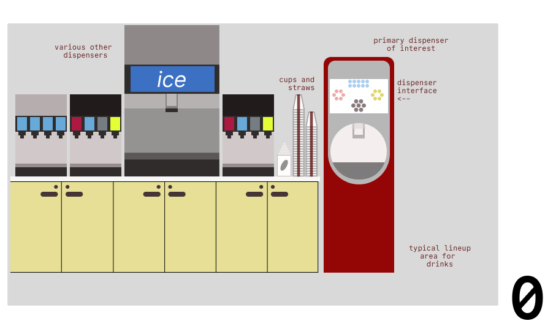

observing user patterns... 100%
drinking water... 100%
dreaming of dispensers... 100%
the scene: it's Pho Friday at Andrews. you're in a sea of freshmen and have been waiting for 473 years to get your pho. you're thirsty, and a drink is all you need.
for a ui/ux designer, this is a user flow waiting to be optimized. you're the user, and the drink is the goal. how do you get there?
to find this out, we asked Andrews enjoyers some questions:
for those unfamiliar with Andrews, here's a quick illustration of what's going on:
Initial mockup of Andrews drinks area.
some initial people-watching and observation of Andrews showed that:
and some more detailed people-talking gave us 3 great interviews:
| Interviewee | Insights |
|---|---|
| Mr. Andrews Pho | Found interface frustrating, unclear drink availability, long lines, slow responsiveness, wants faster system and clearer labels. |
| Ms. Chili Crisp | Found interface intuitive, responsive touchscreen, no confusion, smooth experience, wants more flavor options. |
| Dr. Yakisoba | Noted ice accumulation issue, usable interface, but distracted by messiness and broken dispenser features. |
here's two personas that describe exactly what the spectrum of Andrews-goers looks like:
good end of spectrum.
bad end of spectrum.
here's a big storyboard to explain it all: